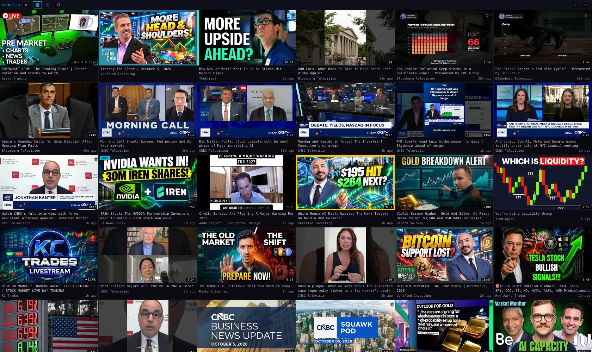
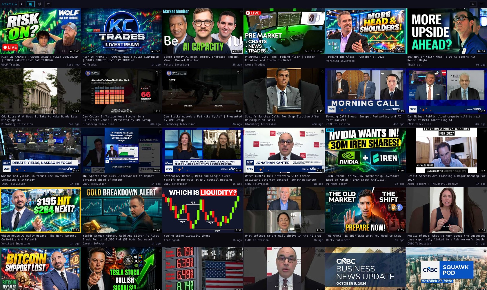
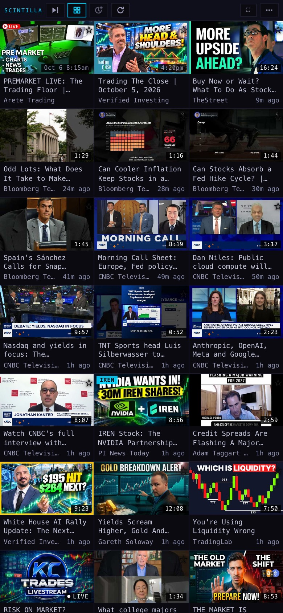
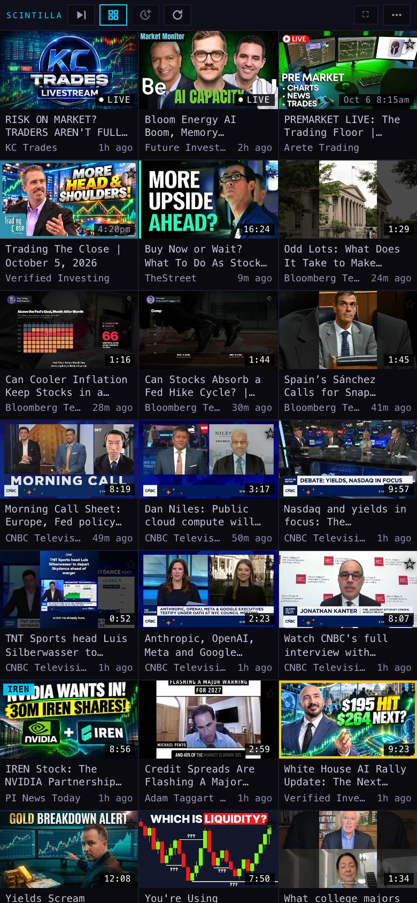
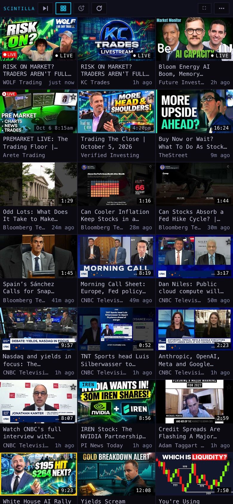
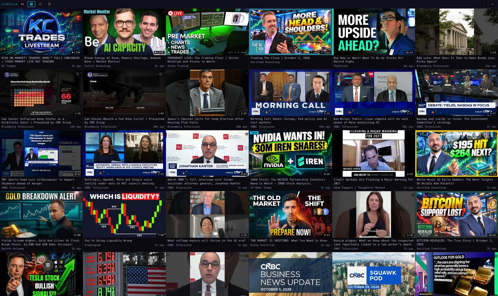

X accounts → YouTube channels → the SCINTILLA feed, on air first
5 Oct 2026. Of the 126 X accounts we hold, 30 have a YouTube channel we can show is theirs — 29 channels, 25 of them not in our feed today. WOLF Trading is one of the 25; that is why you did not see it. Everything is written and tested on two branches. Nothing is switched on yet: it needs your word, then the coordinator applies it.
1 · The bridge: X account → YouTube channel
126 accounts · 21 sure · 9 likely · 47 look-alikes left out · 49 with no channel found
| X account | YouTube channel | How sure | Found how | In our feed today | At 15:26 ET |
|---|---|---|---|---|---|
| @WOLF_TradingX | WOLF Trading UCvTUPg9PxLq3DO72AZBygNg | sure | posted its own channel address (youtube.com/@wolf_tradingx, 2×) · 8 of the 8 videos it posted itself are from this channel · youtube.com/@WOLF_TradingX exists · the names match · 5,740 subscribers | new | ON AIR |
| @A_Najumi | Traveller UCrOcsRCLkz8doOc4FGF4S4w | sure | 1 of the 1 videos it posted itself are from this channel · youtube.com/@A_Najumi exists · the channel page links back to x.com/A_Najumi · 105 subscribers | new | not streaming |
| @alphatrends | Brian Shannon UCfD3rq06LaA8wc3s2m3LwRQ | sure | youtube.com/@alphatrends exists · the channel page links back to x.com/alphatrends · 63,500 subscribers | new | not streaming |
| @benjamincowen | Benjamin Cowen UCRvqjQPSeaWn-uEx-w0XOIg | sure | 8 of the 8 videos it posted itself are from this channel · the names match | already carried | not streaming |
| @Futurenvesting | Future Investing UCvWx0-NX-9qVLCSW9yjdX-g | sure | 2 of the 2 videos it posted itself are from this channel · youtube.com/@Futurenvesting exists · the channel page links back to x.com/Futurenvesting · the names match · 81,900 subscribers | already carried | ON AIR |
| @GossettTrading | Gossett Trading & Mentoring UCviK0XeiDS0l1deHtEVmrKw | sure | 8 of the 8 videos it posted itself are from this channel · the names match | new | not streaming |
| @IncomeSharks | Income Sharks UC4WdQJLdfdH4lyCV2hkt-iQ | sure | youtube.com/@IncomeSharks exists · the channel page links back to x.com/IncomeSharks · the names match · 8,570 subscribers | new | not streaming |
| @JonahLupton | Jonah Lupton UCnNV58dwf5X7dkrvCE18Djw | sure | youtube.com/@JonahLupton exists · the channel page links back to x.com/JonahLupton · the names match · 10,600 subscribers | new | not streaming |
| @kingcobratrader | KingCobraTrades UC6Dnuzr4uJhfU5mcSm3pJgw | sure | 8 of the 8 videos it posted itself are from this channel · the names match | new | not streaming |
| @KobeissiLetter | The Kobeissi Letter UCgtjx1rfbCJyo8RR0XdiWww | sure | youtube.com/@KobeissiLetter exists · the channel page links back to x.com/KobeissiLetter · the names match · 3,590 subscribers | new | not streaming |
| @listingtrack | ListingTrack UCwX6kLA5qa3JsyXyxfixKAQ | sure | youtube.com/@listingtrack exists · the channel page links back to x.com/listingtrack · the names match · 109 subscribers | new | not streaming |
| @MandoTrading | MANDOTRADING UCsXaaMg95tCNL-tJb4j4GWQ | sure | youtube.com/@MandoTrading exists · the channel page links back to x.com/MandoTrading · the names match · 2,250 subscribers | new | not streaming |
| @NEOSInvestments | NEOS Investments UCPiroGQ17KIh6htWW0pHSIw | sure | 2 of the 2 videos it posted itself are from this channel · youtube.com/@NEOSInvestments exists · the channel page links back to x.com/NEOSInvestments · the names match · 3,570 subscribers | new | not streaming |
| @ripster47 | Ripster , Tenet Trade Group UC2DGNpUZSnFl4RRAouQ3mLw | sure | 4 of the 5 videos it posted itself are from this channel · the names match | new | not streaming |
| @satymahajan | Saty Mahajan UCF3YBU7CfOLrQ7u1DjaxNRQ | sure | 3 of the 3 videos it posted itself are from this channel · youtube.com/@satymahajan exists · the names match · 18,600 subscribers | new | not streaming |
| @TheChartReport | The Chart Report UCoxmJkN7QnmYF55ukvekSuA | sure | youtube.com/@TheChartReport exists · the channel page links back to x.com/TheChartReport · the names match · 2,020 subscribers | new | not streaming |
| @TheRonnieVShow | TheRonnieVShow UCkDElJZEmdnswfoXK5cjDgw | sure | 3 of the 3 videos it posted itself are from this channel · youtube.com/@TheRonnieVShow exists · the channel page links back to x.com/TheRonnieVShow · the names match · 8,090 subscribers | new | not streaming |
| @thestockwhale | StockWhale UCwqHs_qbAQzx6mQtaV7C7gg | sure | youtube.com/@thestockwhale exists · the channel page links back to x.com/thestockwhale · the names match · 3,290 subscribers | already carried | not streaming |
| @TrendSpider | TrendSpider UCVvdnt2An8rC7zeey6Sa7bQ | sure | youtube.com/@TrendSpider exists · the channel page links back to x.com/TrendSpider · the names match · 59,800 subscribers | new | stream scheduled |
| @TriggerTrades | Trigger Trades UCOfLITbjjNjcIVaV9pBZuCA | sure | youtube.com/@TriggerTrades exists · the channel page links back to x.com/TriggerTrades · the names match · 2,960 subscribers | new | not streaming |
| @unusual_whales | Unusual Whales UCaqenTegMoW98A4trRofR1A | sure | posted its own channel address (youtube.com/@UnusualWhales, 2×) · 3 of the 3 videos it posted itself are from this channel · the channel page links back to x.com/unusual_whales · the names match | new | not streaming |
| @alshfaw | AstroZan UCpNwmNz4Avr-mb-T_-xqllA | likely | posted its own channel address (youtube.com/@AstroZanLLC, 1×) | new | not streaming |
| @hamids | Buy Hold Rant - Stocks and Investing UCSA0DGhoraHLWhby7njGhoQ | likely | 7 of the 7 videos it posted itself are from this channel | already carried | not streaming |
| @IBDinvestors | Investor's Business Daily UC5fZv7bPcF5j2RsfO-9OiLA | likely | 8 of the 8 videos it posted itself are from this channel | new | stream scheduled |
| @MicroCapClub | MicroCapClub UCzX4HLkD7eXBgzVwHMZlhmg | likely | 1 of the 2 videos it posted itself are from this channel · youtube.com/@MicroCapClub exists · the names match · 15,000 subscribers | new | not streaming |
| @PaperGainsInc | School of Gains UC1WnXpKhLxm4ewfG_dWEdgw | likely | 4 of the 8 videos it posted itself are from this channel · youtube.com/@PaperGainsInc exists · 10,900 subscribers | new | not streaming |
| @StockMarketNerd | Futurum Equities UCxvG6RV1YWTEKN34emXKcPA | likely | 3 of the 3 videos it posted itself are from this channel | new | not streaming |
| @StocksOnSpaces | WOLF Financial UC307gGuaTYg0FYsnA2lsvOA | likely | posted its own channel address (youtube.com/@wolf_financial, 1×) | new | stream scheduled |
| @WolfRyan | WOLF Trading UCvTUPg9PxLq3DO72AZBygNg | likely | 4 of the 4 videos it posted itself are from this channel | new | ON AIR |
| @zerohedge | Zero Hedge UCaO9gH0HOmvXjZg_tMG0lLQ | likely | youtube.com/@zerohedge exists · the names match · 418,000 subscribers | new | not streaming |
"Sure" means the channel's own page links back to the X account, or the account posted its own channel address, or nearly every video it posted itself is from that channel and the names agree. "Likely" is one step weaker, for example eight of eight posted videos from one channel whose name is written differently.
47 LOOK-ALIKES, NOT ADDED — a second look would settle them
A channel with the same handle exists, or the account shared a single video. Neither proves the channel is theirs. Some are plainly real (Beth Kindig's handle belongs to a 6-subscriber stranger; her real channel has another name). A paste of Grok Bot's list would settle these in one run.
| X account | Candidate | Why it is only a candidate |
|---|---|---|
| @AceTheKid | WOLF Trading | 1 of the 1 videos it posted itself are from this channel |
| @amitisinvesting | amitisinvesting | youtube.com/@amitisinvesting exists · the names match |
| @Barchart | Barchart | 1 of the 1 videos it posted itself are from this channel · the names match |
| @BeardoTrader | BeardoTrader | youtube.com/@BeardoTrader exists · the names match |
| @bespokeinvest | mindlessgonzoALT | 1 of the 1 videos it posted itself are from this channel |
| @Beth_Kindig | Beth Kindig | youtube.com/@Beth_Kindig exists · the names match · 6 subscribers |
| @blondesnmoney | Franklin | youtube.com/@blondesnmoney exists |
| @bluechipdaily | Blue Chip Daily | youtube.com/@bluechipdaily exists · the names match |
| @cperruna | cperruna | youtube.com/@cperruna exists · the names match |
| @FakeTrading | Fake trading | youtube.com/@FakeTrading exists · the names match |
| @FrankCappelleri | CappThesis - Frank Cappelleri | 1 of the 1 videos it posted itself are from this channel · the names match |
| @fundstrat | Thomas (Tom) Lee (not drummer) FSInsight.c | youtube.com/@fundstrat exists · 24 subscribers |
| @fxevolution | fxevolution | youtube.com/@fxevolution exists · the names match · 5 subscribers |
| @granthawkridge | Grant Hawkridge | youtube.com/@granthawkridge exists · the names match |
| @hhhypergrowth | Apple | 2 of the 2 videos it posted itself are from this channel |
| @iancassel | MicroCapClub | 2 of the 4 videos it posted itself are from this channel |
| @InvestVerified | Verified Investing | 2 of the 2 videos it posted itself are from this channel |
| @JayWoods3 | jay woods | youtube.com/@JayWoods3 exists · the names match |
| @JEFETRADES | Jefe trades | youtube.com/@JEFETRADES exists · the names match · 328 subscribers |
| @JesseOlson | Grant | youtube.com/@JesseOlson exists · 3 subscribers |
| @JigarShahDC | Jigar Shah | youtube.com/@JigarShahDC exists · the names match |
| @KGBULLANDBEAR | Schwab Network | 1 of the 1 videos it posted itself are from this channel |
| @kpak82 | Kevin Pak | youtube.com/@kpak82 exists |
| @LadeBackk | Lade Backk | youtube.com/@LadeBackk exists · the names match |
| @MarketMike | Figuring Out Money | 1 of the 1 videos it posted itself are from this channel |
| @mikemcglone11 | MINING | 1 of the 4 videos it posted itself are from this channel |
| @Oculustrade | Oculus Trading | youtube.com/@Oculustrade exists · the names match · 581 subscribers |
| @Rayner_Teo | 𝐖𝐇𝐀𝐓𝐀𝐏𝐏 +𝟏 (𝟔𝟔𝟎) 𝟖𝟓𝟖-𝟖𝟐𝟏𝟕 | youtube.com/@Rayner_Teo exists · 3 subscribers |
| @REXShares | Rex | youtube.com/@REXShares exists · 5 subscribers |
| @RoyLMattox | RoyLMattox | youtube.com/@RoyLMattox exists · the names match |
| @SatoshiAlien | AnonAlien | youtube.com/@SatoshiAlien exists |
| @saxena_puru | PSax | 1 of the 1 videos it posted itself are from this channel |
| @_Shark_Trading | Shark | 1 of the 1 videos it posted itself are from this channel · the names match |
| @ShortSeller | ShortSeller | youtube.com/@ShortSeller exists · the names match |
| @SpacBobby | Newstalk ZB | 1 of the 1 videos it posted itself are from this channel |
| @StackInvesting | Stack Investing | youtube.com/@StackInvesting exists · the names match · 3 subscribers |
| @stockdatamarket | Data Driven Stocks | youtube.com/@stockdatamarket exists |
| @stocktalkweekly | Stock Talk | youtube.com/@stocktalkweekly exists · the names match · 396 subscribers |
| @SubuTrade | Subu Trade | youtube.com/@SubuTrade exists · the names match · 25 subscribers |
| @SunriseTrader | Ram Trades | 1 of the 1 videos it posted itself are from this channel |
| @TCMLLC | CNBC Television | 1 of the 3 videos it posted itself are from this channel |
| @TheRoaringKitty | ABlazinGrace | youtube.com/@TheRoaringKitty exists · 4 subscribers |
| @TheSwingTraderr | TheSwingTrader | youtube.com/@TheSwingTraderr exists · the names match · 54 subscribers |
| @TMLTrader | TMLTrader | youtube.com/@TMLTrader exists · the names match · 8 subscribers |
| @TradableAstro | Tradable Astro | youtube.com/@TradableAstro exists · the names match · 13 subscribers |
| @TraderJonesy | TraderJonesy | youtube.com/@TraderJonesy exists · the names match · 8 subscribers |
| @Web3Marmot | Marmot Crypto | youtube.com/@Web3Marmot exists |
49 ACCOUNTS WITH NO CHANNEL FOUND
@alex2023allez · @BahamaBen9 · @Basssem666 · @blondebroker1 · @BrookerBelcourt · @bullishbrs · @cs2024usa · @DanielTNiles · @DJohnson_CPA · @fit_businessman · @FromValue · @Guruleaks1 · @HenrikZeberg · @HiddenPivots · @hiddensmallcaps · @InvestingVisual · @JaguarAnalytics · @Joe_Bohringer · @JulianKlymochko · @KemTrades · @LogicalThesis · @lord_fed · @MarketNewsApp · @MichaelPBento · @michael_venuto · @Mr_Derivatives · @MrMikeInvesting · @MrTinvests · @mukund · @newsinvesting · @NoLimitGains · @notoriousalerts · @Pjmatlock · @plantmath1 · @prrobbins · @QuantKaz · @Reformed_Trader · @richard_chu97 · @spac_insider · @StealthQE4 · @Stock_Opine · @TheBronxViking · @the_chart_life · @The_RockTrading · @TornikeLaghidze · @TrackerFink · @TradexWhisperer · @TradingThomas3 · @Wealth_Theory
2 · WOLF Trading, now
Channel: WOLF Trading UCvTUPg9PxLq3DO72AZBygNg — @WOLF_TradingX. Sure: posted its own channel address (youtube.com/@wolf_tradingx, 2×) · 8 of the 8 videos it posted itself are from this channel · youtube.com/@WOLF_TradingX exists · the names match · 5,740 subscribers.
On YouTube at 15:33 ET: ON AIR — "RISK ON MARKET? TRADERS AREN'T FULLY CONVINCED | STOCK MARKET LIVE DAY TRADING", 342 watching (video MqOnx6420No). It was also on air at 15:23, 15:26 and 15:31 ET.
In our feed at 15:22 ET: not there. We held two old WOLF Trading videos (July and August) that a ticker search had found. The channel was in neither channel list, so nothing was collecting it.






3 · Into the SCINTILLA feed
- The 29 channel ids go into one new settings row. The collector adds them to our own channel list on every pass. You do not have to subscribe to anything.
- 4 of the 29 were already carried; 25 are new.
- Our own stored list is never rewritten. Delete the row and the channels are gone on the next pass, five minutes later.
- The RADAR search pacing is untouched. The bridge makes no search at all. YouTube's daily allowance: 79 searches × 101 = 7,979 units (as on 2 Oct) + the collector's worst case 1,440 = 9,419 of 10,000, the same figure as before this work.
4 · On air now
- Every 20 minutes the collector opens each bridged channel's public "live" address. It costs nothing against the YouTube allowance. A channel on air answers with the stream; one that is not answers with its channel page.
- A stream found on air is written into the feed in that same pass. YouTube's own answer then gives the real state and the real start time, so a page misread cannot mark something LIVE.
- Before, a stream reached us only through YouTube's channel feed, which can run late, and only for channels in a list.
- The Station grid puts on-air streams first, newest start first, with the LIVE mark it already had. Only channels the feed carries are put first. A stream on air for more than 12 hours (a round-the-clock channel) keeps its ordinary place.
- Stale LIVE marks are cleaned. At 15:22 ET, 13 stored videos said LIVE; the oldest had said so since 21 Sep. The collector only re-checked the last three days. It now re-checks every row that says LIVE.
X Spaces — the wall. X's Spaces lookups need a paid X developer key. We hold none, and the X feed rule is "never the X API". Two things are possible without one. First, hosts post the Space link: 52 posts in our stored feed carry one, 26 from @StocksOnSpaces and 11 from @WOLF_TradingX. A SPACE mark on those posts is a small job, but our X collector has captured nothing since 25 Sep, so it would show nothing today. Second, WOLF Trading sends the same show to YouTube, so the YouTube check above catches it.
5 · What needs you
- Your word to switch it on. One settings row, one collector update, one Station update. Recommendation: yes. It adds channels and reorders live streams; it removes nothing, and one deleted row undoes it.
- A paste. Your full X follow list is not stored anywhere we can read. These 126 accounts are the members of your X "Trading" list. Paste the follow list, or Grok Bot's list of accounts with channels, as a text file into
handoffs/, one handle per line. One command then adds them. Recommendation: paste Grok Bot's list; it also settles the 47 look-alikes. - A sign-in, later. None of the six YouTube accounts is refreshing its subscriptions; the collector runs on the channel lists saved earlier. The bridge does not need the sign-in. New subscriptions on the SCINTILLA and PERSONAL accounts do. Recommendation: connect SCINTILLA and PERSONAL once on the Station's connect page.
What could be wrong
- A "likely" match can be the wrong channel. @alshfaw → AstroZan rests on one posted channel address, and @StockMarketNerd → Futurum Equities on three videos.
- The evidence is the posts we hold, and they stop on 25 Sep. An account that started a channel since then is missed.
- The live check was run from this MacBook. From the collector's data-centre address YouTube may answer with a consent page. The collector then counts the channel as "could not read" and falls back to the channel feed; the first run's count will show it.
- The start time of a stream found on air is unknown until YouTube's own answer arrives in the same pass. If that call fails, the stream is filed at the time it was found.
- The simulated WOLF tile shows "just now" because its real start time was not available here.
What was not done
- Nothing was deployed, no table was written, no schedule was changed.
- No YouTube key was used or read. Matching used public pages only, so no match was confirmed through YouTube's own data service.
- The Hub page was not changed. The Station repo holds an older copy of the collector; it was left alone.
- The on-air check was not run inside the deployed collector, only against recorded pages in tests and against live YouTube from this Mac.
PAGE SPECS
Branches. Hub hub/y2-youtube-bridge-20261005; Station station/y2-youtube-live-20261005.
Files. control/YOUTUBE_CHANNEL_BRIDGE.json (the table above, with evidence per account) · scripts/yt-bridge-resolve.mjs (rebuilds it; --extra <file> adds pasted handles, --live checks who is on air) · supabase/functions/_shared/yt-bridge.mjs (the matching and on-air rules) · supabase/functions/yt-rss-sweep/index.ts v8 · supabase/functions/yt-config/index.ts v5 · supabase/migrations/20261005_youtube_channel_bridge.sql and …_ROLLBACK.sql · Station station-shells/scintilla-video-v1 and personal-video-v1.
For the coordinator, in order. 1 · apply 20261005_youtube_channel_bridge.sql (one new app_config row, read by nothing until step 2). 2 · deploy yt-rss-sweep and yt-config from the Hub branch (both import _shared/yt-bridge.mjs). No cron changes: the on-air check rides the existing 5-minute sweep (cron 167) and runs on every fourth pass. 3 · merge and deploy the Station branch. 4 · check yt-config?status=1: bridge.channels = 29, live_checked = 29, could_not_read = 0. Undo: the rollback file's step 1.
Tests. Hub tests/y2-youtube-bridge-20261005.test.mjs: 17 tests, which run the collector itself against an in-memory table. Hub suite 1,855 → 1,872 tests, 7 failures before and after (the 5 known, plus MONTH and REGIME, which fail on the live branch without this work). Station tests/station-youtube-on-air-first.test.mjs: 13 tests; suite 964 → 977, 18 failures before and after.
Pictures. Headless Chromium, 1680 × 1000 and 390 × 844, the real feed read with the page's own public key; 6 non-GET requests per page were blocked. tools/shots.json lists the first eight tiles of each picture.
Sources for the method. The "/live address lands on the stream" read and the consent cookie follow yt-dlp (github.com/yt-dlp/yt-dlp, the YouTube extractor).